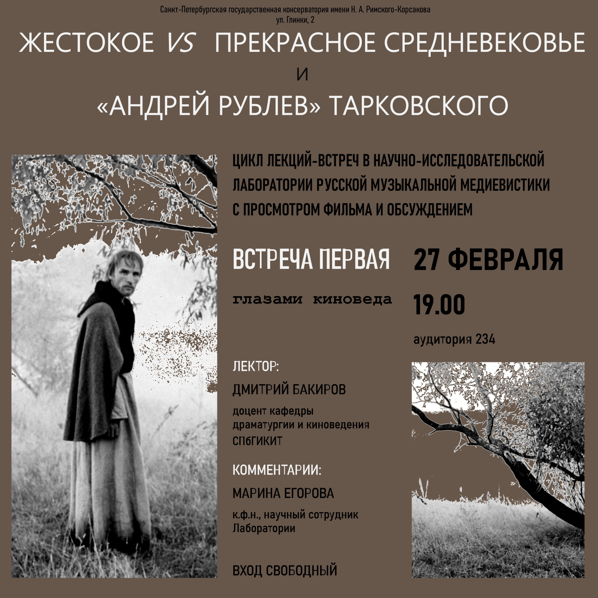

Назад (все проекты)
Жестокое vs прекрасное Средневековье и «Андрей Рублев» Тарковского
В феврале 2020 года Лабораторией инициирован цикл лекций-встреч «Жестокое vs прекрасное
Средневековье и “Андрей Рублев” Тарковского» с просмотром фильма и обсуждением,
рассчитанный на широкую аудиторию студентов, молодых ученых и молодых специалистов,
заинтересованных в изучении музыкальной медиевистики. Первая встреча, состоявшаяся 27
февраля в Санкт-Петербургской государственной консерватории, была посвящена художественному
языку режиссера и реалиям эпохи Средневековья, нашедшим отражение в драматургии фильма
(лекторы: Д. Бакиров, к.иск., доцент кафедры драматургии и киноведения СПбГИКИТ и М. Егорова,
к. ф. н., доцент СПбГК, научный сотрудник Лаборатории). В мероприятиях проекта в качестве
лекторов запланировано участие исследователей-медиевистов – историков, филологов, этнографов,
музыковедов, киноведов. Мероприятие вызвало активный интерес у студентов и выпускников разных
высших учебных заведений Санкт-Петербурга, таких как СПбГК, СПбГУ, ВШЭ, СПбГИК, СПбГИКИТ.
Научная составляющая проекта нацелена на инициирование совместных исследований молодых
медиевистов разных специализаций в области изучения художественных феноменов средневековой
культуры (музыкальных, вербальных, визуальных) в контексте их исторической роли в формировании
«языков искусства» Нового времени.
